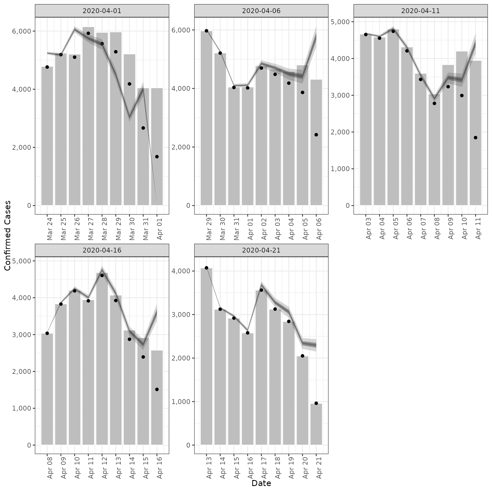
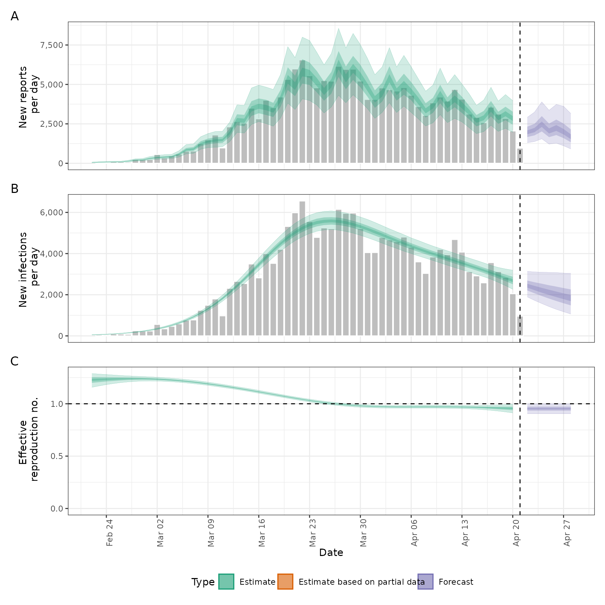

![[Stable]](figures/lifecycle-stable.svg) Estimates a truncation distribution from multiple snapshots of the same
data source over time. This distribution can then be used passed to the
Estimates a truncation distribution from multiple snapshots of the same
data source over time. This distribution can then be used passed to the
truncation argument in regional_epinow(), epinow(), and
estimate_infections() to adjust for truncated data and propagate the
uncertainty associated with data truncation into the estimates.
See here
for an example of using this approach on Covid-19 data in England. The
functionality offered by this function is now available in a more principled
manner in the epinowcast R package.
The model of truncation is as follows:
The truncation distribution is assumed to be discretised log normal wit a mean and standard deviation that is informed by the data.
The data set with the latest observations is adjusted for truncation using the truncation distribution.
Earlier data sets are recreated by applying the truncation distribution to the adjusted latest observations in the time period of the earlier data set. These data sets are then compared to the earlier observations assuming a negative binomial observation model with an additive noise term to deal with zero observations.
This model is then fit using stan with standard normal, or half normal,
prior for the mean, standard deviation, 1 over the square root of the
overdispersion and additive noise term.
This approach assumes that:
Current truncation is related to past truncation.
Truncation is a multiplicative scaling of underlying reported cases.
Truncation is log normally distributed.
Arguments
- data
A list of
<data.frame>s each containing a date variable and a confirm (numeric) variable. Each data set should be a snapshot of the reported data over time. All data sets must contain a complete vector of dates.- truncation
A call to
trunc_opts()defining the truncation of the observed data. Defaults totrunc_opts(), i.e. no truncation. See theestimate_truncation()help file for an approach to estimating this from data where thedistlist element returned byestimate_truncation()is used as thetruncationargument here, thereby propagating the uncertainty in the estimate.- model
A compiled stan model to override the default model. May be useful for package developers or those developing extensions.
- stan
A list of stan options as generated by
stan_opts(). Defaults tostan_opts(). Can be used to overridedata,init, andverbosesettings if desired.- CrIs
Numeric vector of credible intervals to calculate.
- filter_leading_zeros
Logical, defaults to TRUE. Should zeros at the start of the time series be filtered out.
- zero_threshold
![[Experimental]](figures/lifecycle-experimental.svg) Numeric defaults
to Inf. Indicates if detected zero cases are meaningful by using a threshold
number of cases based on the 7-day average. If the average is above this
threshold then the zero is replaced using
Numeric defaults
to Inf. Indicates if detected zero cases are meaningful by using a threshold
number of cases based on the 7-day average. If the average is above this
threshold then the zero is replaced using fill.- weigh_delay_priors
Deprecated; use the
weight_prioroption intrunc_opts()instead.- verbose
Logical, should model fitting progress be returned.
- ...
Additional parameters to pass to
rstan::sampling().- obs
Deprecated; use
datainstead.
Value
A list containing: the summary parameters of the truncation
distribution (dist), which could be passed to the truncation argument
of epinow(), regional_epinow(), and estimate_infections(), the
estimated CMF of the truncation distribution (cmf, can be used to
adjusted new data), a <data.frame> containing the observed truncated
data, latest observed data and the adjusted for
truncation observations (obs), a <data.frame> containing the last
observed data (last_obs, useful for plotting and validation), the data
used for fitting (data) and the fit object (fit).
Examples
# \donttest{
# set number of cores to use
old_opts <- options()
options(mc.cores = ifelse(interactive(), 4, 1))
# fit model to example data
# See [example_truncated] for more details
est <- estimate_truncation(example_truncated,
verbose = interactive(),
chains = 2, iter = 2000
)
#> WARN [2024-11-20 21:41:12] estimate_truncation (chain: 1): There were 13 divergent transitions after warmup. See
#> https://mc-stan.org/misc/warnings.html#divergent-transitions-after-warmup
#> to find out why this is a problem and how to eliminate them. -
#> WARN [2024-11-20 21:41:12] estimate_truncation (chain: 1): Examine the pairs() plot to diagnose sampling problems
#> -
# summary of the distribution
est$dist
#> - lognormal distribution (max: 10):
#> meanlog:
#> - normal distribution:
#> mean:
#> -1.9
#> sd:
#> 0.44
#> sdlog:
#> - normal distribution:
#> mean:
#> 2.2
#> sd:
#> 0.67
# summary of the estimated truncation cmf (can be applied to new data)
print(est$cmf)
#> index mean se_mean sd lower_90 lower_50 lower_20
#> <int> <num> <num> <num> <num> <num> <num>
#> 1: 1 1.0000000 2.780918e-18 1.266409e-16 1.0000000 1.0000000 1.0000000
#> 2: 2 0.9972697 4.578098e-05 1.544848e-03 0.9945896 0.9962553 0.9969574
#> 3: 3 0.9939694 9.822047e-05 3.306885e-03 0.9883080 0.9917468 0.9932489
#> 4: 4 0.9898910 1.590847e-04 5.340466e-03 0.9808598 0.9862905 0.9886655
#> 5: 5 0.9847074 2.308744e-04 7.720209e-03 0.9717122 0.9794273 0.9828561
#> 6: 6 0.9778715 3.172762e-04 1.055081e-02 0.9603821 0.9707062 0.9751489
#> 7: 7 0.9683860 4.240227e-04 1.398133e-02 0.9457122 0.9586898 0.9646073
#> 8: 8 0.9541977 5.606975e-04 1.821937e-02 0.9252773 0.9416227 0.9488966
#> 9: 9 0.9301743 7.432896e-04 2.348965e-02 0.8938073 0.9139986 0.9231522
#> 10: 10 0.8774534 7.609753e-04 2.874396e-02 0.8336208 0.8578146 0.8686479
#> 11: 11 0.4200676 3.376956e-04 1.622621e-02 0.3949625 0.4091080 0.4150474
#> median upper_20 upper_50 upper_90
#> <num> <num> <num> <num>
#> 1: 1.0000000 1.0000000 1.0000000 1.0000000
#> 2: 0.9973522 0.9977825 0.9984388 0.9996632
#> 3: 0.9941155 0.9950385 0.9964539 0.9991955
#> 4: 0.9900866 0.9915739 0.9938330 0.9984845
#> 5: 0.9848437 0.9870497 0.9903998 0.9973814
#> 6: 0.9777995 0.9808080 0.9855063 0.9956075
#> 7: 0.9681051 0.9718943 0.9782113 0.9924641
#> 8: 0.9534405 0.9582225 0.9664334 0.9863304
#> 9: 0.9284525 0.9345937 0.9450346 0.9717261
#> 10: 0.8751554 0.8824865 0.8946820 0.9274613
#> 11: 0.4187792 0.4233016 0.4299526 0.4471744
# observations linked to truncation adjusted estimates
print(est$obs)
#> date confirm last_confirm report_date mean se_mean sd lower_90
#> <Date> <num> <num> <Date> <int> <int> <int> <int>
#> 1: 2020-03-24 4764 4789 2020-04-01 5244 0 28 5198
#> 2: 2020-03-25 5191 5249 2020-04-01 5181 1 40 5115
#> 3: 2020-03-26 5102 5210 2020-04-01 6058 1 65 5950
#> 4: 2020-03-27 5924 6153 2020-04-01 5749 2 83 5609
#> 5: 2020-03-28 5567 5959 2020-04-01 5544 3 105 5362
#> 6: 2020-03-29 5289 5974 2020-04-01 4499 3 112 4304
#> 7: 2020-03-30 4183 5217 2020-04-01 3043 2 98 2876
#> 8: 2020-03-31 2668 4050 2020-04-01 4007 2 152 3759
#> 9: 2020-04-01 1681 4053 2020-04-01 0 NA 0 0
#> 10: 2020-03-29 5970 5974 2020-04-06 6006 0 20 5974
#> 11: 2020-03-30 5209 5217 2020-04-06 5262 0 28 5216
#> 12: 2020-03-31 4035 4050 2020-04-06 4097 0 32 4045
#> 13: 2020-04-01 4020 4053 2020-04-06 4111 1 44 4037
#> 14: 2020-04-02 4697 4782 2020-04-06 4851 2 70 4732
#> 15: 2020-04-03 4483 4668 2020-04-06 4699 2 89 4545
#> 16: 2020-04-04 4182 4585 2020-04-06 4498 3 112 4303
#> 17: 2020-04-05 3864 4805 2020-04-06 4408 3 142 4166
#> 18: 2020-04-06 2420 4316 2020-04-06 5769 4 219 5411
#> 19: 2020-04-03 4653 4668 2020-04-11 4681 0 15 4656
#> 20: 2020-04-04 4554 4585 2020-04-11 4600 0 24 4560
#> 21: 2020-04-05 4741 4805 2020-04-11 4814 1 37 4753
#> 22: 2020-04-06 4208 4316 2020-04-11 4303 1 46 4226
#> 23: 2020-04-07 3431 3599 2020-04-11 3543 1 51 3457
#> 24: 2020-04-08 2779 3039 2020-04-11 2913 1 55 2817
#> 25: 2020-04-09 3234 3836 2020-04-11 3478 2 87 3328
#> 26: 2020-04-10 2993 4204 2020-04-11 3414 2 110 3227
#> 27: 2020-04-11 1848 3951 2020-04-11 4405 3 167 4132
#> 28: 2020-04-08 3036 3039 2020-04-16 3054 0 10 3038
#> 29: 2020-04-09 3829 3836 2020-04-16 3868 0 20 3834
#> 30: 2020-04-10 4187 4204 2020-04-16 4252 0 33 4197
#> 31: 2020-04-11 3916 3951 2020-04-16 4005 1 43 3933
#> 32: 2020-04-12 4605 4686 2020-04-16 4756 2 68 4639
#> 33: 2020-04-13 3925 4074 2020-04-16 4114 2 78 3979
#> 34: 2020-04-14 2873 3124 2020-04-16 3090 2 77 2956
#> 35: 2020-04-15 2393 2919 2020-04-16 2730 2 88 2580
#> 36: 2020-04-16 1512 2580 2020-04-16 3604 2 137 3381
#> 37: 2020-04-13 4074 4074 2020-04-21 4098 0 13 4077
#> 38: 2020-04-14 3124 3124 2020-04-21 3155 0 17 3128
#> 39: 2020-04-15 2919 2919 2020-04-21 2964 0 23 2926
#> 40: 2020-04-16 2580 2580 2020-04-21 2638 0 28 2591
#> 41: 2020-04-17 3563 3563 2020-04-21 3680 1 53 3590
#> 42: 2020-04-18 3126 3126 2020-04-21 3277 1 62 3169
#> 43: 2020-04-19 2843 2843 2020-04-21 3058 2 76 2925
#> 44: 2020-04-20 2051 2051 2020-04-21 2339 1 75 2211
#> 45: 2020-04-21 962 962 2020-04-21 2293 1 87 2151
#> date confirm last_confirm report_date mean se_mean sd lower_90
#> lower_50 lower_20 median upper_20 upper_50 upper_90
#> <int> <int> <int> <int> <int> <int>
#> 1: 5223 5235 5242 5250 5263 5292
#> 2: 5151 5168 5180 5190 5209 5250
#> 3: 6011 6039 6058 6074 6102 6168
#> 4: 5690 5727 5750 5771 5806 5886
#> 5: 5472 5519 5547 5573 5616 5716
#> 6: 4426 4475 4505 4531 4576 4679
#> 7: 2982 3023 3048 3071 3110 3200
#> 8: 3909 3971 4014 4050 4108 4256
#> 9: 0 0 0 0 0 0
#> 10: 5991 5999 6005 6010 6019 6040
#> 11: 5241 5253 5261 5268 5281 5310
#> 12: 4074 4087 4097 4105 4119 4152
#> 13: 4079 4098 4111 4122 4141 4185
#> 14: 4801 4832 4851 4869 4899 4966
#> 15: 4638 4678 4701 4724 4760 4845
#> 16: 4425 4474 4504 4530 4575 4678
#> 17: 4318 4378 4415 4448 4504 4635
#> 18: 5628 5716 5778 5830 5915 6127
#> 19: 4669 4676 4680 4684 4691 4708
#> 20: 4582 4592 4599 4606 4617 4642
#> 21: 4786 4803 4813 4823 4840 4879
#> 22: 4269 4290 4303 4315 4334 4381
#> 23: 3507 3530 3544 3556 3578 3627
#> 24: 2875 2900 2914 2928 2951 3003
#> 25: 3422 3460 3483 3503 3538 3618
#> 26: 3345 3391 3419 3445 3489 3590
#> 27: 4298 4365 4412 4452 4517 4678
#> 28: 3046 3051 3053 3056 3061 3071
#> 29: 3852 3861 3867 3872 3882 3903
#> 30: 4227 4241 4251 4260 4274 4308
#> 31: 3973 3992 4004 4015 4034 4077
#> 32: 4707 4738 4756 4773 4803 4869
#> 33: 4061 4096 4116 4136 4168 4241
#> 34: 3040 3074 3094 3112 3143 3214
#> 35: 2674 2711 2734 2754 2789 2870
#> 36: 3516 3571 3610 3642 3695 3828
#> 37: 4088 4094 4098 4101 4107 4122
#> 38: 3143 3150 3155 3159 3167 3184
#> 39: 2947 2957 2963 2969 2980 3003
#> 40: 2617 2630 2638 2645 2657 2686
#> 41: 3642 3666 3680 3693 3716 3767
#> 42: 3234 3262 3278 3294 3319 3378
#> 43: 3008 3041 3062 3079 3110 3180
#> 44: 2292 2324 2343 2361 2390 2460
#> 45: 2237 2272 2297 2317 2351 2435
#> lower_50 lower_20 median upper_20 upper_50 upper_90
# validation plot of observations vs estimates
plot(est)

# Pass the truncation distribution to `epinow()`.
# Note, we're using the last snapshot as the observed data as it contains
# all the previous snapshots. Also, we're using the default options for
# illustrative purposes only.
out <- epinow(
example_truncated[[5]],
truncation = trunc_opts(est$dist)
)
#> Logging threshold set at INFO for the name logger
#> Writing EpiNow2 logs to the console and:
#> /tmp/Rtmp0uQ2BV/regional-epinow/2020-04-21.log.
#> Logging threshold set at INFO for the name logger
#> Writing EpiNow2.epinow logs to the console and:
#> /tmp/Rtmp0uQ2BV/epinow/2020-04-21.log.
#> WARN [2024-11-20 21:41:14] epinow: ! No generation time distribution given.
#> ℹ Now using a fixed generation time of 1 day, i.e. the reproduction number is
#> the same as the daily growth rate.
#> ℹ If this was intended then this warning can be silenced by setting `dist =
#> Fixed(1)`'. -
#> WARN [2024-11-20 21:43:26] epinow: There were 8 divergent transitions after warmup. See
#> https://mc-stan.org/misc/warnings.html#divergent-transitions-after-warmup
#> to find out why this is a problem and how to eliminate them. -
#> WARN [2024-11-20 21:43:26] epinow: Examine the pairs() plot to diagnose sampling problems
#> -
plot(out)

options(old_opts)
# }